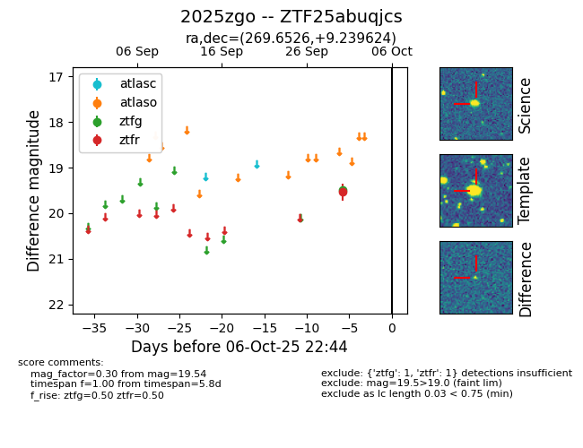

FINK: ZTF25abuqjcs
Lasair: ZTF25abuqjcs
ALeRCE: ZTF25abuqjcs
TNS: 2025zgo
YSE: 2025zgo
ZTF25abuqjcs (ztf,fink)
2025zgo (tns,yse)
equatorial (ra, dec) = (269.6526,+9.23962)
galactic (l, b) = (35.3200,+15.89710)

last ztfg=19.49, ztfr=19.54
1 ztfg, 1 ztfr detections